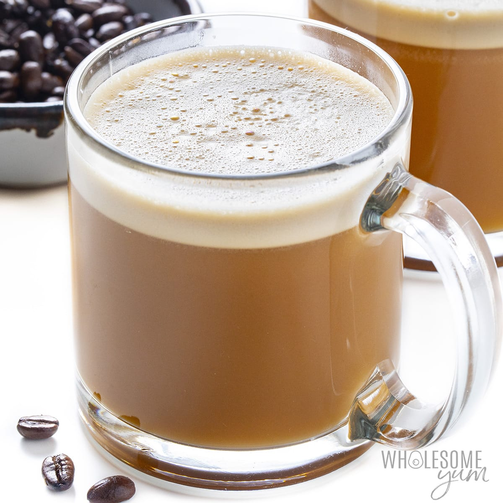

Bulletproof Coffee
Perp-Time: 2minutes
Yield: One large, or two small smoothies
Diet: using supplements to fill nutritional gaps
Ingredients
- 1 cup (8-ounces) hot, freshly brewed black coffee
- 1 to 2 tablespoons grass-fed unsalted butter or ghee, or to taste
- 1 to 2 teaspoons MCT oil, or to taste
For Finishing
Brew some quality coffee. When I make coffee I like a pour-over method, but you can use a french press, french drip, or a Mr. Coffee. Just make your coffee how you like it.
Directions:
Blend the MCT oil, butter, and coffee in a food processor. Some people use a blender, but I exploded bulletproof coffee all over my kitchen 3 times before I got smart and started using a food processor or immersion blender instead.